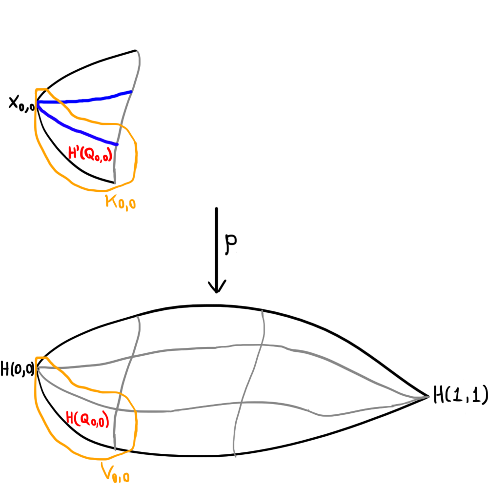

Fibrados e Recobrimentos
Fibrados
Um fibrado com fibra $F \neq \emptyset$ é uma aplicação contínua $\pi \colon E \to B$ tal que para todo $x \in B$ existe uma vizinhança $U_x \subset B$ (chamada vizinhança trivializante de $x$) e um homeomorfismo $\phi_{U_x} \colon U_x \times F \to \pi^{-1}(U_x)$ tal que $\pi_{U_x} = \pi \circ \phi_{U_x}$ é a projeção na primeira coordenada. $E$ é chamado de espaço total do fibrado, $B$ de base do fibrado e $F$ de fibra do fibrado. Vamos nos utilizar, daqui para frente, de um abuso de linguagem e dizer que o espaço total do fibrado é, na verdade, o fibrado (ou seja, fibrado agora passa a ser um espaço que é espaço total de um fibrado).
Exemplo 01: o cilindro e a faixa de Möbius são fibrados com base $\mathbb{S}^1$ e fibra $[0,1]$. Ambos os mapas fibrados são projeções:

Projeções de fibrados em $\mathbb{S}^1$.
Perceba como em cada ponto de $x \in \mathbb{S}^1$ podemos tomar uma vizinhança $U_x$ (em laranja) de forma que localmente, o fibrado se pareça muito com $U_x \times [0,1]$ e, além disso, de forma que essa parte do fibrado que se parece com $U_x \times [0,1]$ quando "projetada" por $\pi$ para $\mathbb{S}^1$ cai exatamente em $U_x$.
Além desses dois, temos também que $\mathbb{R}$ pode ser visto com um fibrado com base $\mathbb{S}^1$, mas desta vez a fibra é diferente:
$\mathbb{R}$ como fibrado sobre $\mathbb{S}^1$
Perceba como desta vez temos que o produto $U_x \times F$ é a união de um cópia de $U_x$ em cada intervalo da forma $[n, n+1]$ para $n$ inteiro, portanto $F = \mathbb{Z}$.
Se $\pi \colon E \to B$ é um fibrado, o levantamento de um caminho $f \colon [a,b] \to B$ é um caminho $\tilde{f} \colon [a,b] \to E$ tal que $\pi \circ \tilde{f} = f$. Aqui, o nome levantamento vem do fato de que ao representarmos fibrados sempre desenhamos o espaço total em cima da base, portanto o caminho de fato é "levantado".
Proposição 02: dados $\pi \colon E \to B$ um fibrado, $f \colon [a,b] \to B$ um caminho e $t_0 \in E$ tal que $\pi(t_0) = f(a)$, existe ao menos um levantamento $\tilde{f}$ tal que $\tilde{f}(a) = t_0$.
Demonstração: vamos supor que $\textrm{Im}f \subset U$ para alguma vizinhança trivializante $U$. Considerando agora o mapa $\phi_U \colon U \times F \to \pi^{-1}(U)$, fixe qualquer $y_0 \in F$ e tome $\tilde{f} \colon [a,b] \to E$ dado por $\tilde{f}(x) = \phi_U(a(x), y_0)$ (note que esse é o levantamento "horizontal", que fixa a segunda coordenada).

Ilustração do caso mais simples.
Mais geralmente, para cada $x \in \textrm{Im}f$ tome $U_x$ vizinhança trivializante de $x$. Note que o conjunto $\{U_x \colon x \in \textrm{Im}f\}$ é uma cobertura para $\textrm{Im}f$ e assim $f^{-1}(U_x)$ formam uma cobertura para $[a,b]$. Sabemos que $[a,b]$ é métrico e compacto, portanto a cobertura das pré-imagens possui número de Lebesgue $r$. Assim, para todo $y \in [0,1]$ temos que $]y-r, y+r[ \subset f^{-1}(U_x)$ para algum $x$. Portanto, podemos quebrar o intervalo $[a,b]$ em $n$ intervalos pequenos de tamanho $1/n < 2r$ e cada um desses intervalos $[\alpha_i, \alpha_{i+1}]$ (note que $\alpha_0 = a$ e $\alpha_n = b$) está num aberto da cobertura das pré-imagens, e por conseguinte a restrição de $f$ a esses subintervalos são caminhos que satisfazem o primeiro caso. Para construirmos o levantamento geral, basta unirmos os levantamentos de cada restrição: levante $f_{[\alpha_0, \alpha_1]}$ de forma que $\tilde{f}_{[\alpha_0, \alpha_1]}$ comece em $t_0$ e levante $f_{[\alpha_i, \alpha_{i+1}]}$ de forma que $\tilde{f}_{[\alpha_i, \alpha_{i+1}]}$ comece no final de $\tilde{f}_{[\alpha_{i-1}, \alpha_i]}$.

Ilustração do caso geral. $\blacksquare$
Observação 03: como $\phi_U \colon U \times F \to \pi^{-1}(U)$ é homeomorfismo, podemos restringir o mapa para $\phi_U' \colon \{x\} \times F \to \pi^{-1}(\{x\})$ que é também um homeomorfismo. Portanto, a pré-imagem de todo ponto é homeomorfa à fibra e, em particular, não-vazia, portanto todo fibrado é sobrejetor.
Proposição 04: seja $\pi \colon E \to B$ um fibrado com fibra $F$ conexa por caminhos. Então o morfismo induzido $\pi_\sharp \colon \pi_1(E, e_0) \to \pi_1(B, \pi(e_0))$ é sobrejetivo.
Demonstração: dado $f \colon [0,1] \to B$ um caminho fechado com ponto base $\pi(e_0)$, como $f(0) = \pi(e_0)$ segue que existe um levantamento de $f$, $\tilde{f} \colon [0,1] \to E$ tal que $\tilde{f}(0) = e_0$. Daí, segue que $\tilde{f}(0) \in \pi^{-1}(\pi(e_0))$ e como $\pi(\tilde{f}(1)) = f(1) = \pi(e_0)$ temos $\tilde{f}(1) \in \pi^{-1}(\pi(e_0))$. Advém do fato de que $\pi^{-1}(\pi(e_0))$ é homeomorfo à fibra, que $\pi^{-1}(\pi(e_0))$ é conexo por caminhos, portanto existe um caminho $\gamma$ que conecta $\tilde{f}(1)$ e $\tilde{f}(0)$. Basta notar agora que $\pi_\sharp([\tilde{f}\gamma]) = [\pi \circ \tilde{f}\gamma] = [(\pi \circ \tilde{f})(\pi \circ \gamma)] = [fe_0] = [f]$. $\blacksquare$
Homeomorfismos locais
Uma aplicação contínua $f \colon X \to Y$ é chamada de homeomorfismo local se todo ponto $x \in X$ tem alguma vizinhança aberta $U$ tal que $f(U)$ é aberto em $Y$ e a restrição $f' \colon U \to f(U)$ é um homeomorfismo.
Exemplo 05: agora vamos apresentar alguns exemplos de homeomorfismos locais:
- $f \colon \mathbb{R} \to \mathbb{S}^1$ dada por $f(t) = (\cos t, \sin t)$;
- $f \colon \mathbb{R}^2 \to \mathbb{T}^2 = \mathbb{S}^1 \times \mathbb{S}^1$ dada por $f(s,t) = (\cos s, \sin s, \cos t, \sin t)$;
- $f \colon \mathbb{C} \to \mathbb{C} \setminus \{0\}$ dada por $f(z) = e^z$;
- $f \colon \mathbb{C} \setminus \{0\} \to \mathbb{C} \setminus \{0\}$ dada por $f(z) = z^2$;
- $f \colon ]-10,10[ \to \mathbb{S}^1$ dada por $f(t) = (\cos t, \sin t)$.
Observação 06: aqui vão alguns fatos sobre homeomorfismos locais:
todo homeomorfismo é um homeomorfismo local. Afinal, para todo ponto $x \in X$, a restrição de $f$ a $X$, que é $f$, é um homeomorfismo.
todo homeomorfismo local é localmente injetivo, ou seja, para todo $x$ no domínio existe uma vizinhança de $x$ tal que o mapa restrito a essa vizinhança é injetor. Esse item é imediato pois podemos tomar as vizinhanças da definição de homeomorfismo local, onde o mapa é não só injetor, mas um homeomorfismo;
todo homeomorfismo local $f \colon X \to Y$ é uma aplicação aberta. Dado $U$ um aberto de $X$, tome o conjunto $\mathcal{U} = \{U_x \subset X \colon x \in U, U_x$ e a restrição de $f$ à $U_x$ é um homeomorfismo$\}$. Agora, perceba que $U = \bigcup (U_x \cap U)$ e $f(U) = f(\bigcup (U_x \cap U)) = \bigcup f(U_x \cap U)$ é aberto (pois é união de abertos, já que $f$ restrita a cada $U_x$ é um homeomorfismo, portanto aberta, e $U_x \cap U \subset U_x$);
se $X$ é compacto, $Y$ é conexo Hausdorff e $f \colon X \to Y$ é homeomorfismo local então $f$ é sobrejetivo. De fato, como $f$ é aberta, $f(X)$ é aberto em $Y$ e como $Y$ é Hausdorff e $X$ é compacto, $f(X)$ é fechado. Porém, num conexo, os únicos conjuntos fechados e abertos são o vazio e o espaço todo, portanto $f(X) = Y$;
homeomorfismos locais sobrejetores são aplicações quociente, afinal, são contínuas (e portanto $U \subset Y$ aberto $\implies f^{-1}(U)$ aberto) e são abertas (ou seja, $f^{-1}(V)$ aberto $\implies f(f^{-1}(V))$ é aberto, mas como $f$ é sobrejetora temos $f(f^{-1}(V)) = V$ e assim $V$ é aberto).
Proposição 07: se $f \colon X \to Y$ é uma aplicação contínua localmente injetiva, então a imagem inversa $f^{-1}(y)$ de qualquer $y \in Y$ é um subconjunto discreto de $X$.
Demonstração: se $y \not\in \textrm{Im}f$, então o resultado segue pois $\emptyset$ é discreto. Agora, se $y \in \textrm{Im}f$, tome $x \in f^{-1}(y)$. Existe uma vizinhança $U$ de $x$ tal que $f$ restrita a $U$ é injetiva, portanto, como $f(x) = y$, $U \cap f^{-1}(y) = \{x\}$ e assim $\{x\}$ é aberto. $\blacksquare$
Corolário 08: se $X$ é compacto, $Y$ é Hausdorff e $f \colon X \to Y$ é localmente injetiva, então $f^{-1}(y)$ é finito para todo $y \in Y$.
Demonstração: como $f^{-1}(y)$ é discreto e fechado e $X$ é compacto, segue que $f^{-1}(y)$ é finito. $\blacksquare$
Levantamentos
Já falamos sobre levantamentos de fibrados, porém, o estudo de levantamentos é mais geral do que isso e agora vamos falar um pouco sobre este. Sejam $f \colon X \to Y$ e $g \colon Z \to Y$ aplicações contínuas. Um levantamento de $g$ relativamente a $f$ é uma aplicação contínua $\tilde{g} \colon Z \to X$ tal que $f \circ \tilde{g} = g$. Podemos colocar hipóteses nos espaços para que o levantamento seja único.
Proposição 09: sejam $f \colon X \to Y$ uma aplicação contínua localmente injetiva com $X$ Hausdorff e $Z$ um espaço topológico conexo. Para toda aplicação contínua $g \colon Z \to Y$, dois levantamentos $\tilde{g}, \hat{g} \colon Z \to X$ de $g$ relativamente a $f$ que coincidem em algum ponto $z_0$ são iguais.
Demonstração: vamos provar que o conjunto $A = \{z \in Z \colon \tilde{g}(z) = \hat{g}(z)\}$ é fechado e aberto, pois pela conexidade de $Z$ teremos que se $A \neq \emptyset$, então $A = Z$ e assim $\tilde{g} = \hat{g}$. Como $\tilde{g}, \hat{g}$ são contínuas, a aplicação $x \mapsto (\tilde{g}(x), \hat{g}(x))$ é contínua e como $X$ é hausdorff, a diagonal de $X$ é fechada. Perceba, por fim, que $A$ é a pré-imagem da diagonal de $X$ pelo mapa acima definido e daí segue que $A$ é fechado (pois pré-imagem de fechado é fechado).
Agora, dado $a \in A$, sabemos que existe uma vizinhança $V$ de $\tilde{g}(a) = \hat{g}(a)$ na qual $f$ é injetiva. Como ambos os levantamentos são contínuos, existem $\tilde{U}$ e $\hat{U}$ vizinhanças de $a$ tais que $\tilde{g}(\tilde{U}) \subset V$ e $\hat{g}(\hat{U}) \subset V$. Ou seja, para todo $x \in U = \tilde{U} \cap \hat{U}$, temos $f(\tilde{g}(x)) = g(x) = f(\hat{g}(x))$ e assim $\tilde{g}(x) = \hat{g}(x)$ pois $f$ é localmente injetiva em $V$. Portanto, temos que $x \in U \subset A$ e assim $A$ é aberto. $\blacksquare$
Uma secção de uma aplicação contínua $f \colon X \to Y$ é um levantamento da identidade $Id_Y$ relativamente a $f$, ou seja, uma aplicação contínua $\sigma \colon Y \to X$ tal que $f \circ \sigma = Id_Y$. Secções podem não existir:
Proposição 10: se $X$ é um espaço conexo e Hausdorff e $f \colon X \to Y$ é localmente injetiva, então $f$ admite uma secção se, e somente se, $f$ é um homeomorfismo.
Demonstração: se $f$ é um homeomorfismo, basta tomar $\sigma = f^{-1}$. Agora, se $\sigma$ for uma secção de $f$, note que $f \circ (\sigma \circ f) = id_Y \circ f = f$ e $f \circ id_X = f$, portanto $\sigma \circ f$ e $id_X$ são levantamentos de $f$ relativamente a $f$ e, mais que isso, $\sigma \circ f = id_X$ pois $(\sigma \circ f)(\sigma(x)) = \sigma(x)$ e portanto $\sigma \circ f$ coincide com $id_X$ em $\textrm{Im}\sigma$. Assim, temos $\sigma \circ f = id_X$ e $f \circ \sigma = id_Y$ portanto $\sigma = f^{-1}$ e $f$ é homeomorfismo. $\blacksquare$
Corolário 11: se $Y$ é conexo, $X$ é Hausdorff, $f \colon X \to Y$ é localmente injetiva e $\sigma \colon Y \to X$ é uma secção de $f$, então a imagem $\sigma(Y)$ é uma componente conexa de $X$.
Demonstração: a restrição de $f$ à componente conexa $C$ que satisfaz $\sigma(Y) \subset C$ é um homeomorfismo com $Y$ (pela Proposição 10) e, além disso, a restrição de $f$ à $\sigma(Y)$ também é (também pela Proposição 10), portanto $C = f^{-1}(Y) = f^{-1}(f(\sigma(Y))) = \sigma(Y)$. $\blacksquare$
Corolário 12: suponha que $X = A \cup B$ é Hausdorff, onde $A$ e $B$ são abertos conexos, e que $f \colon X \to Y$ é aplicação contínua tal que $f$ restrita à $A$ e $f$ restrita à $B$ são homeomorfismos sobre $Y$. Então $A$ e $B$ são componentes conexas de $X$ e portanto ou $A = B$ ou $A \cap B = \emptyset$.
Demonstração: Sabemos que $f$ é localmente injetiva pois, dado $x \in X$, $x \in A$ ou $x \in B$ e $f$ restrita a estes é um homeomorfismo, portanto injetora. Além disso, $Y = f(A) = f(B)$ é conexo e a inversa de $f$ restrita a $A$ é uma secção de $f$, pois $f(f_A^{-1}(x)) = x$. Assim, $f_A^{-1}(Y) = A$ é uma componente conexa de $X$ (da mesma maneira, provamos que vale também para $B$). $\blacksquare$
Recobrimentos
Vamos agora responder uma pergunta muito interessante: dado um homeomorfismo local $f \colon X \to Y$, em que condições podemos levantar todo caminho em $Y$ para o espaço $X$ relativamente a $f$?
Exemplo 13: a aplicação $f \colon ]0, 3\pi[ \to \mathbb{S}^1$ dada por $f(t) = (\cos t, \sin t)$ é um homeomorfismo local, é sobrejetora, mas nem todo caminho em $\mathbb{S}^1$ pode ser levantado. Por exemplo, podemos tomar $\gamma(t) = (\cos 4\pi t, \sin 4\pi t)$.
Um recobrimento é um fibrado com fibra discreta. Chamaremos o espaço total de um recobrimento de espaço de recobrimento.
Exemplo 14: agora vamos apresentar alguns exemplos de homeomorfismos locais:
- $f \colon \mathbb{R} \to \mathbb{S}^1$ dada por $f(t) = (\cos t, \sin t)$;
- $f \colon \mathbb{R}^2 \to \mathbb{T}^2 = \mathbb{S}^1 \times \mathbb{S}^1$ dada por $f(s,t) = (\cos s, \sin s, \cos t, \sin t)$;
- $f \colon \mathbb{C} \to \mathbb{C} \setminus \{0\}$ dada por $f(z) = e^z$;
- $f \colon \mathbb{C} \setminus \{0\} \to \mathbb{C} \setminus \{0\}$ dada por $f(z) = z^2$;
Observação 15: uma construção interessante que devemos destacar é a seguinte. Sabemos que $U_x \times F = \bigsqcup_{f \in F} U_x \times \{f\}$ e, como $F$ é discreto, cada um dos $U_x \times \{f\}$ é aberto. Isso será importante no proposição a seguir.
Proposição 16: recobrimentos são homeomorfismos locais.
Demonstração: dado $\pi \colon M \to B$ recobrimento e $m \in M$, precisamos criar uma vizinhança de $m$ tal que $\pi$ restrito a ela seja um homeomorfismo e que a imagem dela por $\pi$ seja um aberto de $B$. Tome $U_{\pi(m)}$ vizinhança trivializante de $\pi(m)$ em $B$. Sabemos que $\pi^{-1}(U_{\pi(m)})$ é uma união disjunta de $\mid F \mid$ cópias de $U_{\pi(m)}$. Como $m$ pertece à pré-imagem, pertence também a uma dessas cópias, que será a vizinhança na qual a restrição de $\pi$ se torna um homeomorfismo com a imagem. $\blacksquare$
Um conceito que será importante para nós é o de recobrimento*. Um recobrimento* é um mapa $\pi \colon X \to Y$ tal que para todo $y \in Y$ existe uma vizinhança $V$ de $y$ e uma família de abertos $\{U_i\}$ em $X$ tais que $\pi^{-1}(V) = \bigsqcup_i U_i$ e $\pi \colon U_i \to V$ é homeomorfismo. Chamaremos $V$ de vizinhança trivializante* de $y$, $X$ de espaço de recobrimento*, $Y$ de base* e cada $\pi^{-1}(x)$ de fibra* de $x$.
Proposição 17: recobrimentos* são localmente injetivos.
Demonstração: dado $x \in X$, tome $V$ vizinhança trivializante de $\pi(x)$. Sabemos que existe uma família $\{U_i\}$ de abertos de $X$ com $\pi^{-1}(V) = \bigsqcup_i U_i$ e assim $x \in U_k$ para algum $k$. Como $\pi \colon U_k \to V$ é um homeomorfismo, em particular é injetora. $\blacksquare$
Proposição 18: todo recobrimento é um recobrimento*.
Demonstração: se $\pi \colon X \to Y$ é um recobrimento de fibra $F$, dado $y \in Y$ existe uma vizinhança $V$ de $y$ e um homeomorfismo $\phi_V \colon V \times F \to \pi^{-1}(V)$ tal que $\pi \circ \phi_V$ é a projeção na primeira coordenada. Note que $V \times F = \bigsqcup_{f \in F} V \times \{f\}$ e defina $U_f = \phi_V(V \times \{f\})$. Note que $\bigsqcup_f U_f$ $=$ $\bigsqcup_f \phi_V(V \times \{f\})$ $=$ $\phi_V\left( \bigsqcup_f V \times \{f\} \right)$ $=$ $\phi_V(V \times F)$ $=$ $\pi^{-1}(V)$ e que $\pi \colon U_f \to V$ é homeomorfismo pois $U_f$ é apenas uma cópia de $V$ "mergulhada" em $\pi^{-1}(V)$. $\blacksquare$
Lema 19: se $\pi \colon X \to Y$ é um recobrimento* com $Y$ conexo, então para quaisquer $y, y' \in Y$ temos que $\pi^{-1}(y)$ e $\pi^{-1}(y')$ são homeomorfos.
Demonstração: fixado $y_0 \in Y$, defina $A = \{y \in Y \colon \pi^{-1}(y)$ e $\pi^{-1}(y_0)$ são homeomorfos$\}$. Vamos mostrar que $A$ é fechado e aberto, assim como $y_0 \in A$, teremos $A = Y$ pois $Y$ é conexo. Dado $a \in A$, como $\pi$ é um recobrimento*, existe uma vizinhança $V$ de $a$ e uma família de abertos $\{U_i\}$ tais que $\pi^{-1}(V) = \bigsqcup_i U_i$ e $\pi \colon U_i \to V$ é homeomorfismo. Note agora que podemos reindexar a família $\{U_i\}$ pelos elementos de $\pi^{-1}(a)$, pois para cada $U_i$ temos que $|U_i \cap \pi^{-1}(a)| = 1$, já que $\pi$ quando restringido a $U_i$ é homeomorfismo. Assim, basta que para cada $b \in V$, criemos o mapa $\pi^{-1}(a) \to \pi^{-1}(b)$ dado por $x \mapsto U_x \cup \pi^{-1}(b)$. Esse mapa cria uma bijeção entre as pré-imagens, que se torna um homeomorfismo pois estas são discretas pela Proposição 07. Portanto, temos que $V \subset A$ e assim $A$ é aberto.
Precisamos agora mostrar que $A$ é fechado. A heurística será a mesma: basta tomar um ponto $a \not\in A$ e a vizinhança trivializante* $V$ de $a$. Pelo mesmo argumento anterior, elementos de $V$ terão pré-imagem homeomorfa à pré-imagem de $a$ e assim teremos $V \subset Y \setminus A$, portanto $A$ é fechado. $\blacksquare$
Teorema 20: se $Y$ é conexo, um mapa $\pi \colon X \to Y$ é um recobrimento se, e somente se, for um recobrimento*.
Demonstração: se $\pi$ for um recobrimento, pela Proposição 17 sabemos que $\pi$ é um recobrimento. Agora, se $\pi$ for um recobrimento*, tome o conjunto $F$ homeomorfo a alguma pré-imagem de algum ponto de $Y$ ($F$ está bem definido pelo Lema 18). Dado $y \in Y$, tome a vizinhança trivializante* $V$ de $y$. Sabemos que $\pi^{-1}(V) = \bigsqcup_{x \in \pi^{-1}(V)} U_x$ para alguma família $\{U_x\}$ de abertos de $X$ e que $\pi U_x \to V$ é homeomorfismo. Dado $b \colon F \to \pi^{-1}(y)$ homeomorfismo, basta definir $\phi_V(x,f) = \pi_f^{-1}(x)$, onde $\pi_f \colon U_{b(f)} \to V$ é dado por $\pi_f(z) = \pi(z)$. Perceba que $(\pi \circ \phi_V)(x,f) = \pi(\pi_f^{-1}(x)) = x$ e assim o teorema segue. $\blacksquare$
O Teorema 20 é importante pois muitas das vezes que queremos provar que um mapa é um recobrimento e o contra-domínio deste for conexo, vamos apenas provar que esse mapa é um recobrimento*. A partir de agora, se a base for conexa, iremos utilizar ambas as definições para falarmos de recobrimentos.
Recobrimento Universal
Dado um espaço $Y$ e um recobrimento $\pi \colon X \to Y$, diremos que $\pi$ é universal se $X$ for simplesmente conexo. Vamos provar que todo espaço conexo por caminhos, Hausdorff, localmente conexo por caminhos e localmente simplesmente conexo possui um único recobrimento universal. Dizemos que um espaço é localmente simplesmente conexo se para todo ponto $x$ e para toda vizinhança $V$ de $x$, existe uma vizinhança $U$ de $x$ simplesmente conexa com $U \subset V$.
Antes de começarmos, vamos conversar um pouco sobre notação. Desde a aula sobre Grupo Fundamental eu venho implementando essa notação aos poucos, mas nunca falei dela explicitamente. Se $H \colon X \times [0,1] \to Y$ é uma homotopia, vamos denotar $H(x,t) = H_t(x)$ daqui para frente. Essa notação facilita pois começamos a perceber que uma homotopia nada mais é que um caminho em um espaço de funções, que a cada tempo $t$ nos dá uma função $H_t$ contínua. Além disso, ela facilita a leitura, pois fica claro qual é o nosso parâmetro de tempo da homotopia (a notação antiga era de fato mais confusa pois o domínio da homotopia pode variar entre $[0,1]\times X$ e $X \times [0,1]$ dependendo do texto. Também, quando $X = [0,1]$ poderíamos ter alguma confusão por não saber quem é o tempo da homotopia e o tempo dos caminhos).
Proposição 21: dados $\pi \colon X \to Y$ um recobrimento, $y \in Y$ e $\gamma$ um caminho de $Y$ começando em $y$, para todo $x \in \pi^{-1}(y)$ existe um único levantamento de $\gamma$ começando em $x$.
Demonstração: pela Proposição 02 temos a existência. Dados $\gamma_1$ e $\gamma_2$ dois levantamentos de $\gamma$ começando em $x$, se $\gamma$ está em uma vizinhança trivializante temos que $\pi$ é um homeomorfismo nesta vizinhança e como $\pi \circ \gamma_1 = \pi \circ \gamma_2$ segue que $\gamma_1 = \gamma_2$. Se $\gamma$ não éstá contido em uma vizinhança trivializante, a unicidade continua valendo pois podemos repetir o argumento anterior para cada restrição construída na demonstração de existência. Como cada uma das restrições será única, o levantamento tem que ser também. $\blacksquare$
Proposição 22: dados $\pi \colon X \to Y$ um recobrimento e $H \colon [0,1]^2 \to Y$ uma homotopia de caminhos, para cada $x_0 \in \pi^{-1}(H(0,0))$ existe um levantamento $H'$ de $H$ com respeito a $\pi$ tal que $H'(0,0) = x_0$.
Demonstração: seja $\{V_i\}$ uma cobertura de $\textrm{Im}H$ por abertos trivializantes (podemos por exemplo tomar um aberto trivializante para cada ponto da imagem), temos que $\{H^{-1}(V_i)\}$ é uma cobertura de $[0,1]^2$ e como este é um espaço métrico compacto, segue que existe um número de Lebesgue $r$ dessa cobertura, ou seja, um número $r$ tal que todo conjunto com diâmetro $r$ está contido num aberto dessa. Queremos agora construir um $n$ inteiro positivo tal que qualquer quadrado de lado $1/n$ esteja contido em algum aberto da cobertura. Para isso, precisamos incluir estes quadrados em conjuntos com diâmetro $r$. Esses conjuntos podem ser, em particular, bolas com raio $r/2$, portanto basta escolhermos $n$ tal que $\sqrt{2}/n < r$.
Defina $Q_{i,j} = \{(x,t) \colon i/n \leq x \leq (i+1)/n, j/n \leq t \leq (j+1)/n\}$ (com $0 \leq i,j \leq n - 1$). Note que $Q_{i,j}$ é um quadrado de lado $1/n$, portanto está contido em um aberto $H^{-1}(V_{i,j})$ da nossa cobertura. Além disso, $\{Q_{i,j}\}$ é uma cobertura para $[0,1]^2$.

Exemplo da cobertura $\{Q_{i,j}\}_{0 \leq i,j \leq n-1}$ com $n = 3$.
Para construirmos o levantamento, primeiro vamos levantar cada um dos quadrados: dado um quadrado $ Q_{i,j}$ temos a vizinhança $V_{i,j}$ já definida no parágrafo passado. Seja $K_{i,j} \subset X$ uma vizinhança qualquer homeomorfa à $V_{i,j}$. Podemos definir então $H'|_{Q_{i,j}}(x,t) = (\pi|_{K_{i,j}})^{-1}(H(x,t))$. O problema agora mora em fazer com que essa função $H'$ seja contínua. Faremos isso garantindo que levantamentos coincidam nas bordas dos quadrados $H(Q_{i,j})$ e, para isso, basta escolhermos as vizinhanças $K_{i,j}$ certas.
A escolha das vizinhanças $K_{i,j}$ será feita da seguinte forma: para cada $V_{0,j}$ temos que $H(0,0) \in V_{0,j}$ e portanto basta fixarmos um ponto $x_0 \in \pi^{-1}(H(0,0))$ e tomarmos as vizinhanças $K_{0,j}$ como sendo as que contém o ponto $x_0$. Note que dessa maneira fazemos com que as bordas compartilhadas pelos quadrados (destacadas em azul na figura abaixo) comecem todas em $x_0$ e assim pela Proposição 21 elas devem coincidir.
Levantamento dos quadrados com primeiro índice igual a $0$.
Para escolhermos as vizinhanças certas para os próximos quadrados, iremos utilizar as escolhas anteriores: dado um quadrado $Q_{i,j}$ com $i \neq 0$, escolha $K_{i,j}$ de forma que $H'(i/n, j/n) \in K_{i,j}$. Note que já sabemos calcular $H'(i/n, j/n)$, basta que o processo de levantamento seja indutivo em $i$, ou seja, como temos os levantamentos de quadrados $H(Q_{0,j})$ vamos levantar quadrados $H(Q_{1,j})$ (perceba que para levantarmos esses precisariamos saber calcular $H'(0, j/n)$, mas $(0, j/n) \in Q_{0,j}$). Depois, vamos levantar os quadrados $H(Q_{2,j})$ e assim por diante.
A escolha das vizinhanças faz com que as bordas dos quadrados coincidam e isso faz com que $H'$ seja contínua. Se $t \in [j/n, (j+1)/n]$ temos $H'(0,t) = (\pi|_{K_{0,j}})^{-1}(H(0,t))$ que é constante e, pela continuidade de $H'$, devemos ter $H'(0,t)$ constante para todo $t$. Da mesma maneira, $H'(1,t)$ é constante e assim $H'$ é uma homotopia de caminhos.
Levantamento total da homotopia.
Teorema 23: dado $Y$ conexo por caminhos, Hausdorff, localmente conexo por caminhos e localmente simplesmente conexo existe um recobrimento universal $\pi \colon X \to Y$.
Demonstração: vamos pensar em como construir esse recobrimento. Faremos isso supondo que ele existe e tirando conclusões a partir dai, fazendo com que a construção tenha alguma motivação.
Se $X$ é um recobrimento universal para $Y$, fixe $y_0 \in Y$ e tome $x_0 \in \pi^{-1}(y_0)$. Dado um ponto $y \in Y$, podemos levantar qualquer caminho $\gamma$ de $y_0$ em $y$ para algum caminho $\tilde{\gamma}$ partindo de $x_0$ tal que $\pi(\tilde{\gamma(1)}) = \gamma(1)$ (pela Proposição 02) e, mais ainda, esse levantamento é único (pela Proposição 09). Além disso, temos "a volta": dado um caminho $\tilde{\gamma}$ em $X$ partindo de $x_0$, temos que $\pi \circ \tilde{\gamma}$ é um caminho em $Y$ e $\tilde{\gamma}(1) \in \pi^{-1}((\pi \circ \tilde{\gamma})(1))$.